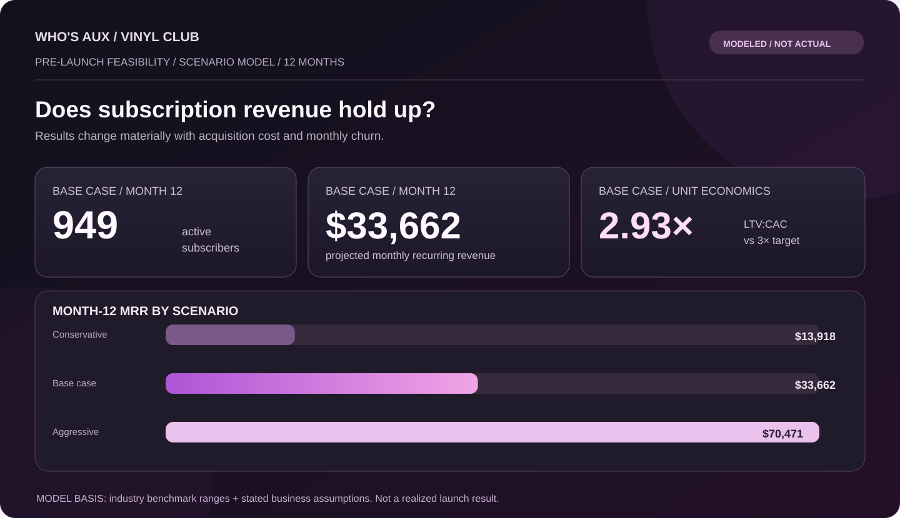

01 / Base case
949 subs / $33.7K MRR
By month 12, the Base case reaches 949 active subscribers and roughly $33,662 in monthly recurring revenue. Its 2.93x LTV:CAC lands just under the 3:1 threshold generally treated as healthy.
A pre-launch feasibility study for a proposed vinyl subscription product. Built to address the economic feasibility rather than a general possibility.

The business was already selling through multiple ecommerce channels, but every sale was still a one-time transaction that had to be won again the next month. When order volume began weakening, a vinyl subscription club came up as a possible way to create a recurring revenue base and reduce that dependence on individual channel performance.
I treated the idea as one option, not the answer. The goal was to pressure-test the subscription economics and compare them against other product lines before sourcing inventory, committing marketing spend, or building the operation around it.
Decision frame
My first pass modeled the club as though a seven-month pilot had already happened: synthetic cohorts, retention curves, and growing monthly recurring revenue. The model worked mathematically, but the premise was wrong. I was using an invented pilot to prove that an untested product could work.
I scrapped that version and rebuilt the analysis around two clearly separated inputs: cited market benchmarks and assumptions specific to the proposed product. From there I built Conservative, Base, and Aggressive scenarios around churn, acquisition cost, margin, subscriber growth, and LTV:CAC, then compared Vinyl Club against three other product-line options on a weighted scorecard.
The deliberate restart
The reset made the model less flattering, but much more defensible: the idea was allowed to fail if the numbers didn't support it.
01 / Base case
By month 12, the Base case reaches 949 active subscribers and roughly $33,662 in monthly recurring revenue. Its 2.93x LTV:CAC lands just under the 3:1 threshold generally treated as healthy.
02 / Downside
In the Conservative case, Year-1 gross profit does not recover acquisition spend. The model stays cash-negative through the first year.
03 / Upside
If an owned audience materially lowers acquisition cost and churn holds near 5%, the Aggressive case becomes cash-positive around month five and produces roughly $114.9K in Year-1 net contribution.
04 / Scorecard
Vinyl Club had the highest modeled Year-1 revenue at about $251.7K, but simpler add-ons and limited merch drops scored better once margin, acquisition cost, launch speed, and fulfillment complexity were included.
01
Use checkout add-ons to create incremental revenue with almost no new customer-acquisition burden.
02
Limited drops can generate faster revenue on existing ecommerce rails while also testing audience appetite.
03
Use a real waitlist and small cohort to measure whether actual churn can stay at or below 8% and CAC at or below $70 before scaling spend.
04
Revisit them later, when audience size and creator leverage improve enough to offset the weaker modeled economics.
The first version looked more finished because it had retention history, cohorts, and recurring revenue already moving in the right direction. That was exactly the problem. I had effectively invented evidence for the thing I was supposed to evaluate.
The rebuild forced a cleaner discipline: every important input needed to be either sourced or labeled as an assumption, and the product had to compete against alternatives instead of being analyzed in isolation. The result was less flattering to Vinyl Club, but much more useful as an actual business decision.